기상기사 (2004-03-07 기출문제)
1과목: 기상관측법
1. 다음 주요 하천의 결빙 관측에 대한 설명 중 옳지 않은 것은?
- 결빙 초일과 해빙일을 관측한다.
- 매년 상황에 따라 관측장소를 바꾼다.
- 얼음 두께는 관측대상에서 제외된다.
- 빙면의 어느 일부분만 녹아서 노출되어도 해빙으로 관측한다.
(정답률: 알수없음)

2. 구름이 전천을 덮었을 때의 운량은?
- 10
- 9
- 5
- 0
(정답률: 알수없음)
3. 태양이 북회귀선(tropic of cancer)을 지날 때를 무엇이라 하는가?
- 춘분(春分, vernal equinox)
- 하지(夏至, summer solstice)
- 추분(秋分, autumnal equinox)
- 동지(冬至, winter solstice)
(정답률: 알수없음)
4. 고층기상 관측소에서 1일 4회 관측하지 않는 경우라도 반드시 해야하는 관측시각은?
- 0300Z(GMT)
- 0600Z(GMT)
- 0900Z(GMT)
- 1200Z(GMT)
(정답률: 알수없음)
5. 강우량 기록에서 잘못된 것은?
- 강우량이 0.⑤㎜ 이상이면 0.1㎜로 기록하고 0.04㎜ 미만이면 0.0으로 기록한다.
- 강우현상이 전혀 없을 때에는 0.0으로 기록한다.
- 눈, 싸락눈, 우박 같은 것이 우량계에 쌓여 있을 때에는 일정량의 더운물로 녹여서 재고 처음 사용한 물의 양을 뺀다.
- 비, 눈등이 없어도 안개, 이슬, 서리같은 것으로 어떤 양이 있을 때는 기입하고 오른편 위에 그 종류를 기호로 표시하여 둔다.
(정답률: 40%)
6. 백엽상의 역할이 아닌 것은?
- 강풍의 차단
- 복사에너지의 차단
- 공기 유통의 원활 유지
- 복사에너지의 반사
(정답률: 알수없음)
7. 다음 풍향 표시 중 적절히 표시된 것은?
- ENE
- NEN
- SWS
- SEE
(정답률: 알수없음)
8. 다음중 고층 종관 관측소가 아닌 것은?
- 라디오 존데(radio - sonde)관측소
- 라윈존데(rawin - sonde)관측소
- 레이다(radar)관측소
- 파이발(pilot balloon)관측소
(정답률: 알수없음)
9. 관측 야장 습구난에 시도(示度)숫자 바로 위의 우측에 불 자를 부기하는 것은?
- 건구가 0℃ 이하이다.
- 습구가 0℃ 이하이다.
- 습구가 0℃ 이하 이면서도 빙결치 않을 때
- 습구가 0℃ 이하로 빙결하였을 때
(정답률: 알수없음)
10. 상대습도를 표시한 식에서 맞는 것은? (단, E는 포화 수증기압이고, e는 실제수증기압을 나타낸다)
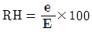
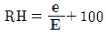
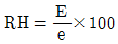
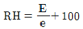
(정답률: 알수없음)
11. 복사이론에서 사용되는 langley의 단위를 바르게 표시한 것은?
- 1 gram-calorie/㎝
- 1 gram-calorie/cm2
- 1 gram-calorie/cm3
- 1 gram-calorie
(정답률: 알수없음)
12. 대형 증발계(class A pan)의 수위 측정기는 증발계의 어느 쪽에 고정시키는가?
- 동
- 서
- 남
- 북
(정답률: 알수없음)
13. 파장별 일사량 관측에는 국제적으로 공인된 RG1, RG2, RG8 등의 필터가 흔히 사용되고 있다. 이중 RG2의 파장 범위는?
- 0.28 ~ 2.8㎛
- 0.525 ~ 2.8㎛
- 0.63 ~ 2.8㎛
- 0.7 ~ 2.8㎛
(정답률: 알수없음)
14. 철관 지중 온도계는 어느 정도의 깊이 이상되는 지중 온도를 관측하는데 사용하는가?
- 0.5m
- 1m
- 3m
- 5m
(정답률: 알수없음)
15. 기상관측보고에서 박무(mist)로 분류되는 기준은?
- 층이 얇아 하늘이 보이는 경우
- 입자의 직경이 0.1㎜ 이하인 경우
- 수평시정이 1㎞보다 작지 않은 경우
- 수평시정이 2㎞ 이상이고 푸른색을 띨 경우
(정답률: 알수없음)
16. 뷰우포트(Beaufort)풍력계급에서 가장 높은 계급인 12의 풍속은 약 몇 m/sec 이상인가?
- 11m/sec
- 17m/sec
- 25m/sec
- 33m/sec
(정답률: 알수없음)
17. 모발 습도계에 대한 설명 중 적당치 않은 것은?
- 습도에 따라 인간 모발의 길이가 변하는 것을 이용한 것이다.
- 습도가 높으면 모발의 길이는 늘어난다.
- 기온이 높으면 모발의 길이는 늘어난다.
- 추운지방에서 사용하기에 적당하다.
(정답률: 알수없음)
18. 다인(dyne)의 설명 중 맞는 것은?
- 차원이 gm.㎝/sec2 이다.
- 에너지의 단위이다.
- 차원이 gm.㎝/sec 이다.
- 공률의 단위이다.
(정답률: 알수없음)
19. 황사현상이 나타났을 때 가장 현저하게 변화하는 기상 요소는?
- 기온
- 시정
- 일조시간
- 습도
(정답률: 알수없음)
20. 다음 중 정온(calm)에 해당되지 않는 것은?
- 무풍
- 풍속 0.1㎧ 이하
- 풍속 0.2㎧ 이하
- 풍속 1 ㎧ 이하
(정답률: 알수없음)
2과목: 대기열역학
21. 휀(Foehn)현상에 의해 산맥의 풍하(風下)쪽에 기온을 높게하는 열원은?
- 수증기 응결에 의한 잠열
- 공기와 지면간의 마찰열
- 얼음결정이 녹기 위한 융해열
- 지표면으로 부터의 전도열
(정답률: 알수없음)
22. 공기에 열을 공급하거나 빼앗지 않을 때 일어나는 과정은?
- 응결과정
- 단열과정
- 증발과정
- 응축과정
(정답률: 알수없음)
23. 정역학 방정식(Hydrostatic equation) -Δ P = -ρ gΔ Z에서 음부호는 무엇을 의미하는가?
- 고도에 따른 중력 증가
- 고도에 따른 중력 감소
- 고도에 따른 기압 증가
- 고도에 따른 기압 감소
(정답률: 알수없음)
24. ｇ를 중력가속도, ρ 를 가열된 공기괴의 밀도, ρo를 주위 대기의 밀도라 할 때 그 공기괴의 상승 가속도는?
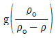
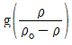
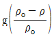
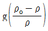
(정답률: 알수없음)
25. 0℃, 1hPa 하에서의 기체 상수의 값(erg K-1㏖-1)은?
- 1.386 × 10-16
- 2.8902 × 106
- 6.0248 × 1023
- 8.3134 × 107
(정답률: 알수없음)
26. 대기의 안정도를 따지는 방법 중 slice method는 다음 중 어느 사항을 고려한 것인가?
- 보상(compensation)
- 수평혼합(horizontal mixing)
- 유입(entrainment)
- 수평수렴(horizontal convergence)
(정답률: 알수없음)
27. 열역학 제 2법칙을 적절히 설명한 것은?
- 계(系)의 상태를 정의하는 열역학적 변수 사이의 관계를 나타낸다.
- 열역학 계(系)의 에너지 보존법칙이다.
- 열역학 과정에서 열이 흘러가는 방향을 명시한다.
- 복사열의 이동을 나타낸다.
(정답률: 알수없음)
28. T를 공기괴의 기온, P를 기압, R을 기체상수, Cp를 정압 비열이라 한다면, 온위(Potential temperature)는 다음 중 어느 식으로 표시되는가?
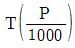
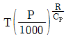
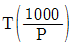
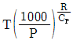
(정답률: 알수없음)
29. 방안의 온도는 공기분자의 무엇과 관계되는가?
- 질량
- 평균속도
- 밀도 성질
- 기압
(정답률: 알수없음)
30. 온도가 일정할 때 이상기체의 압력을 2배로 증가시키면 그 부피는?
- 2배로 증가한다.
- 1/2로 감소한다.
- 4배로 증가한다.
- 1/4로 감소한다.
(정답률: 알수없음)
31. 다음 중 이상 기체의 상태 방정식을 옳게 나타낸 것은? (단,Ｐ는 기압, Ｔ는기온, Ｒ은 기체상수, Ｖ는 체적, ｍ은 기체의 질량이다)
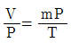
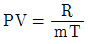
- PV=mPT
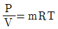
(정답률: 알수없음)
32. 두 등압면의 고도차 즉 대기층의 층두께(thickness)와 가온도(virtual temperature)에 대한 다음 관계식 중 맞는 것은? (단, Δｈ는 층후,
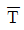
는 그 대기층의 평균 가온도이다.)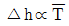
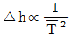
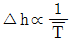
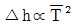
(정답률: 알수없음)
33. 단위질량의 건조공기의 온위(읨)와 entropy(ø)와의 관계는? (단, ℓ 은 수증기의 기화잠열)
- ∮dø=∮CvdT+∮Tdp
- ø=Cpℓnθ+Const
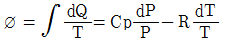
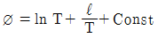
(정답률: 알수없음)
34. Skew T - log P 단열선도에 표시되어 있는 등치선만 나열해 놓은 것은?
- 건조단열선, 습윤단열선, 등풍속선, 등습도선
- 등압선, 등온선, 건조단열선, 포화혼합비선
- 등고선, 등비적선, 등온선, 등온위선
- 등풍향선, 등압선, 등강수량선, 건조단열선
(정답률: 알수없음)
35. 20℃일 때의 포화증기압이 23.373 hPa이다.이 경우에 상대습도가 50%라면 현재의 증기압(hPa)은?
- 11.687
- 23.373
- 46.746
- 70.119
(정답률: 알수없음)
36. 기압이 1000hPa이고 기온이 10℃인 공기덩이의 비체적(specific volume)은 얼마인가? (단, 비기체 상수는 2.87 × 106erg g-1K-1이다)
- 0.01cm3/g
- 0.10cm3/g
- 8.12 × 102cm3/g
- 9.86 × 102cm3/g
(정답률: 알수없음)
37. Specific entropy의 차원을 옳게 적은 것은? (단, L은 길이, T는 시간, θ 는 온도)
- [LT2 θ-1]
- [L2T2θ-1]
- [L2T-2θ-1]
- [L-2T2θ-1]
(정답률: 알수없음)
38. 대기중에 함유되어 있는 수증기량에 변화가 없고 바람없이 맑은 날에 있어서 상대습도가 제일 높을 때는?
- 해가뜰 무렵
- 정오경
- 오후 3시경
- 해가질 무렵
(정답률: 알수없음)
39. 건조공기의 정압비열의 변화를 바르게 설명한 것은?
- 항상 압력이 증가할수록 커진다.
- 항상 온도가 증가할수록 커진다.
- 압력에 관계없이 일정하다.
- 온도에 관계없이 일정하다.
(정답률: 알수없음)
40. 0℃ 물의 승화열은 얼마인가?
- 80㎈/g
- 127㎈/g
- 597㎈/g
- 677㎈/g
(정답률: 알수없음)
3과목: 대기운동학
41. 연직운동 방정식의 부력항에 있는 밀도를 제외하고 모든 밀도를 일정하다고 가정하는 근사는?
- 지균근사
- 정역학근사
- 부시네스크근사
- 경도풍근사
(정답률: 알수없음)
42. 일반적으로 마찰 층의 제일 상부는 어느 고도에 위치하는 가?
- 500 m
- 1000 m
- 3000 m
- 5000 m
(정답률: 알수없음)
43. 종관규모의 운동에서 연직 P - 속도(ω)의 근사값으로 가장 적합한 식은? (단, p : 기압,
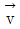
: 속도벡터, t : 시간, W : 연직속도, ρ : 공기밀도, g : 중력가속이다.)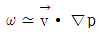
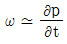
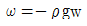
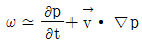
(정답률: 알수없음)
44. 다음 중 편서풍 파동이 대기 대순환에 미치는 영향에 해당되지 않은 것은?
- 남북의 열교환
- 남북 대기간의 물질 교환
- 동서 평균류의 남북 경도 완화
- 페렐 순환세포를 유지하려는 경향
(정답률: 알수없음)
45. 온도풍의 설명 중 틀린 것은?
- 좌측에 찬공기,우측에 따뜻한 공기를 두고 분다.
- 좌측에 층의 두께가 얇은 쪽을 두고 분다.
- 등층후선에 평행하게 분다.
- 기압경도력과 같은 방향으로 분다.
(정답률: 알수없음)
46. 한 등압면에서 공기가 수렴역으로 흐를 때 절대와도의 특성은?
- 절대와도가 증가한다.
- 절대와도가 증가∙감소로 진동한다.
- 절대와도가 감소한다.
- 절대와도가 증가 후에 감소한다.
(정답률: 알수없음)
47. 다음 ( ) 안에 들어갈 말로서 적당한 것은?
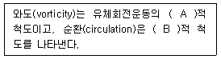
- A: 거시, B:거시
- A:거시, B:미시
- A: 미시, B:거시
- A:미시, B:미시
(정답률: 알수없음)
48. 다음 그림과 같은 경우에 남반구에서 A지점의 지균 풍향은?
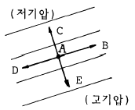
- B
- C
- D
- E
(정답률: 알수없음)
49. 위도 45° N에서 곡률반경이 200㎞인 관성류의 속도는?
- 저기압성 20㎳-1
- 고기압성 20㎳-1
- 저기압성 25㎳-1
- 고기압성 25㎳-1
(정답률: 알수없음)
50. 위도 30도와 적도 사이에 있는 직접 순환은?
- 몬순 순환
- Hadley 순환
- Walker 순환
- Ferrel 순환
(정답률: 알수없음)
51. 다음 중 무역풍의 방향으로 옳은 것은?
- 북풍
- 남풍
- 북반구에서 북동풍
- 남반구에서 서풍
(정답률: 알수없음)
52. 다음 중에서 토네이도의 바람을 가장 잘 나타낼 수 있는 것은?
- 지균풍
- 온도풍
- 경도풍
- 선형풍
(정답률: 알수없음)
53. 컵에 차를 넣고 둥글게 휘저었을 때 차가 spin-down되는 주된 mechanism은?
- 분자의 활동
- 에디에 의한 분산(diffusion)
- 2차 순환(secondary circulation)
- 각 운동량 보존
(정답률: 알수없음)
54. 순압대기에 관한 내용 중 맞는 것은?
- 연직 풍속 shear가 있다.
- 지균풍은 고도와 관계없이 일정하다.
- 밀도는 기압과 온도만의 함수이다.
- 등밀도면과 등압면이 일치하지 않는다.
(정답률: 알수없음)
55. 고도(x, y, z) 좌표계 상에 고정한 조그마한 입체의 체적δv를 생각하고 이에 작용하는 기압을 P, 이 입체와 유체의 평균 속력을
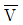
, 그리고 유체의 속도를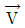
라 한다면 기압력에 의해서 이 물체에 행해진 총일의 율(total rate of work)을 표시하는 것은?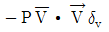
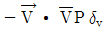
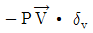
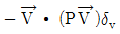
(정답률: 알수없음)
56. 100 Pascal의 물리량의 단위를 dyne cm-2로 나타낸 것으로 맞은 것은?
- 10
- 100
- 1000
- 10000
(정답률: 알수없음)
57. 회전 좌표계상에서 정지해 있는 공기덩이가 받는 힘이 아닌 것은?
- 전향력
- 원심력
- 만유인력
- 기압경도력
(정답률: 알수없음)
58. 다음은 경도풍(gradient wind)의 설명이다. 틀린 것은?
- 지균풍(geostrophic wind)보다 항상 크다.
- 등압선의 곡률반경이 커지면 지균풍에 가까워진다.
- 평형을 이루는 세 힘은 기압경도력,코리올리 힘, 원심력이다.
- 조건이 같다면 고기압성 경도풍은 저기압성 경도풍 보다 크다.
(정답률: 알수없음)
59. 적도의 상층에서와 중위도의 편서풍대에서는 운동에너지가 어떻게 유지되어 편서풍이 지속되는가?
- 열대성 저기압에 의한 운동에너지의 생성
- 극전선에 의한 운동에너지의 생성
- 평균 남북순환에 의한 운동에너지의 생성과 수송
- 열대성 저기압에 의한 운동에너지의 생성과 수송
(정답률: 알수없음)
60. 대상 운동에너지가 대상 유효위치에너지로 전환되는 순환 세포는?
- Hadley 세포
- Ferrel 세포
- Polar 세포
- 적도 세포
(정답률: 알수없음)
4과목: 기후학
61. 다음 중 대기의 창(atmosphere window)의 구간은?
- 1㎛ ∼ 10㎛
- 8㎛ ∼ 13㎛
- 6㎛ ∼ 10㎛
- 4㎛ ∼ 16㎛
(정답률: 알수없음)
62. 다음 중 우리 나라 일부지역에 해당되는 쾨펜(Kӧppen)의 기후형은?
- Af
- Dw
- BW
- ET
(정답률: 알수없음)
63. 우리나라의 여름철에 영향을 주는 기단이 아닌 것은?
- 오호츠크해 기단
- 열대 기단
- 북태평양 기단
- 시베리아 기단
(정답률: 알수없음)
64. 과거의 기후를 추정하는데 가장 관계가 적은 것은?
- 단층(fault)
- 화석
- 고토양(palaesol)
- 호상점토(varved clay)
(정답률: 알수없음)
65. 기후 지수로서 적합하지 않은 것은?
- 건조지수
- 강수효율
- 적산온도
- 식물기간
(정답률: 알수없음)
66. 다음 중 미기후의 대상은?
- 지표면
- 지상 1㎞ 까지
- 지상 10㎞ 까지
- 지상 30㎞ 까지
(정답률: 알수없음)
67. Kӧppen의 기후구분중 일부를 그림으로 표시하였다. 그림에서 ①로 표시되는 기후 형태는 다음 중 어느 것인가? (단,최한월의 평균기온은 18℃ 이상이다.)
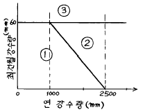
- Aw
- Af
- Cw
- Cf
(정답률: 알수없음)
68. 세로축에 월평균 기온,가로축에 월 강수량을 잡아 월별 분포를 그래프로 나타내어 체감기후를 판단한 것은?
- 하이더 그래프
- 클라이모 그래프
- 모노 그래프
- 실효온도계산 그래프
(정답률: 알수없음)
69. 다음 지표면 상태 중 알베도(albedo)가 가장 큰 것은?
- 삼림
- 모래땅
- 마른땅
- 풀밭
(정답률: 알수없음)
70. 기후지수의 일종인 우량인자(雨量因子, Rain Factor)는 다음과 같이 정의된다. 우량인자 = R/T, 여기서 R은 연강수량(mm), T는 연평균 기온(℃)이다. 우량인자를 가장 잘 설명한 내용은?
- 기후의 한냉 및 그 지방의 토양형과 밀접한 관계가 있다.
- 기후의 온습과 그 지방의 우기와 관계가 있다.
- 기후의 건습과 그 지방의 토양형과 밀접한 관계가 있다.
- 기후의 건습과 그 지방의 우량분포를 알 수 있다.
(정답률: 알수없음)
71. 우리 나라(남한)의 연강수량이 여름철에 집중하는 비율은 대략 몇 %인가? (단,울릉도는 제외한다.)
- 25 ∼ 45%
- 40 ∼ 60%
- 50 ∼ 70%
- 60 ∼ 80%
(정답률: 알수없음)
72. 지구상에서 평균 기온이 가장 높은 위도대는?
- 0°
- 10° N
- 10° S
- 23.5° N
(정답률: 알수없음)
73. 찬 공기가 따뜻한 수면 위를 통과할 때 발생하는 안개는?
- 이류안개
- 증기안개
- 복사안개
- 전선안개
(정답률: 알수없음)
74. 다음 중 가장 주기가 긴 기후변동의 요인은?
- 상층 편서풍의 변화
- 엘니뇨/남방진동
- 화산분화
- 온실기체에 의한 온난화
(정답률: 알수없음)
75. 다음 그림은 원형의 작고 낮은 산에 대한 우량분포를 나타낸 것이다. 이곳 최다 풍향이 서풍이면 우량이 제일 많은 지역은?
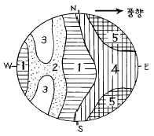
- 1
- 2, 3
- 4
- 5
(정답률: 알수없음)
76. 다음 중 기후(climate)의 정의와 관계가 적은 것은?
- 일기의 종합
- 일기의 평균
- 정상적인 일기
- 일기의 범위
(정답률: 알수없음)
77. 다음 중 푄(Fohn)풍과 같은 종류의 바람인 것은?
- Bora
- Chinook
- Mistral
- Norther
(정답률: 알수없음)
78. 다음 기후 아시스템(subsystem) 중 가장 열적 관성(thermal inertia)이 짧은 것은?
- 대기권(Atmosphere)
- 수권(Hydrosphere)
- 빙권(Cryosphere)
- 생권(Biosphere)
(정답률: 알수없음)
79. 지구의 자전에 의하여 위도 30° 부근(중위도 고압대)에서 위도 60° 부근사이의 지표면을 북반구에서는 북동쪽으로, 남반구에서는 남동쪽으로 향하여 불어가는 바람은?
- 무역풍
- 편서풍
- 편동풍
- 극풍
(정답률: 알수없음)
80. 보라(Bora)와 푄(Fohn)을 설명한 것 중 틀린 것은?
- 보라는 한대기단, 푄은 아열대기단에 의해서 발생한다.
- 보라는 겨울철에 푄은 여름철에 주로 발생한다.
- 보라는 습도가 높아지고 푄은 습도가 낮아진다.
- 보라는 기온이 낮아지고 푄은 기온이 높아진다.
(정답률: 알수없음)
5과목: 일기분석 및 예보론
81. 300 hPa등압면 일기도에서 분석되는 요소가 아닌 것은?
- 습도
- 기온
- 고도
- 풍속
(정답률: 알수없음)
82. 전선면의 기울기에 대한 다음 기술 중 맞는 것은?
- 두 기단의 풍속차에 비례한다.
- 두 기단의 풍속차에 반비례한다.
- 두 기단의 풍속차의 제곱에 비례한다.
- 두 기단의 풍속차의 제곱에 반비례한다.
(정답률: 알수없음)
83. 다음은 지상 일기도에 기입된 관측자료의 한 예이다. 이 지점의 기압은?
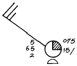
- 965hPa
- 1015hPa
- 1006.5hPa
- 1007.5hPa
(정답률: 알수없음)
84. 위단열 변화에 포함되지 않은 것은?
- 성설급(成雪級)
- 성우급(成雨級)
- 성박급(成雹級)
- 건조급(乾燥級)
(정답률: 알수없음)
85. 그림과 같이 상층 기압골에 제트의 핵(core)이 위치 할 때 강한 수렴이 발생하는 지역은?
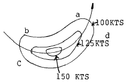
- a지역
- b지역
- c지역
- d지역
(정답률: 알수없음)
86. 서울지방의 상공에서 700hPa면의 기울기가 200㎞당 60gpm이던 것이 120gpm으로 되었다면 지균풍속의 변화로서 맞는 것은?
- 1/2 로 감소한다.
- 변화가 없다.
- ２배로 증가한다.
- ４배로 증가한다.
(정답률: 알수없음)
87. 온난전선의 해석에 가장 적합한 일기도는?
- 500hPa 일기도
- 700hPa 일기도
- 850hPa 일기도
- 200hPa 일기도
(정답률: 알수없음)
88. 관천망기에 의한 일기예상이다. 가장 적합한 것은?
- 저녁 무지개는 흐릴 징조
- 아침 무지개는 개일 징조
- 풍하쪽의 무지개는 악천의 징조
- 풍상쪽의 무지개는 악천의 징조
(정답률: 알수없음)
89. 겨울철 중위도 지방에서의 저기압의 평균 진행속도는 대략 몇 ㎞/hour나 되는가?
- 10
- 20
- 30
- 40
(정답률: 알수없음)
90. 다음 중 대류 응결고도를 결정하는데 사용되는 것은?
- 지상최저 기온, 노점온도
- 500hPa면 기온, 수급온도
- 지상대류온도, 상태곡선
- 700hPa면 대류온도, 상태곡선
(정답률: 알수없음)
91. 지상풍과 등압선의 교각(交角)은?
- 0도
- 25 ∼ 35도
- 45 ∼ 55도
- 90도
(정답률: 알수없음)
92. 다음 그림에서 곡율에 의한 와도의 크기는 얼마인가? (단, 곡율반경은 40km 이다.)
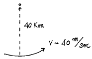
- 10-1sec-1
- 10-2sec-1
- 10-3sec-1
- 10-4sec-1
(정답률: 알수없음)
93. 기온감률이 가장 큰 것은 다음 중 어느 것인가?
- 건조대기
- 표준대기
- 저온의 습윤대기
- 고온의 습윤대기
(정답률: 알수없음)
94. 지균풍과 경도풍의 관계에 대해 옳지 않는 것은?
- 저기압성 흐름에서는 지균풍이 경도풍보다 크다.
- 고기압성 흐름에서는 지균풍이 경도풍보다 작다.
- 열대성 저기압에는 경도풍보다 지균풍이 잘 맞는다.
- 지균풍과 경도풍의 차는 로스비수와 같다.
(정답률: 알수없음)
95. 일기 예상시 외삽법을 적용하는데 대한 설명으로 적당하지 않은 것은?
- 속도 변화가 클수록 그 결과가 양호하다.
- 연속성을 바탕으로 하고 있다.
- 과거의 강도로서 앞으로의 강도를 예상한다.
- 단기예보에 이용된다.
(정답률: 알수없음)
96. 국제기상전문에 통보하는데 있어 현재천기10의 시정제한의 거리는?
- 100m 이상
- 500m 이상
- 1000m 이상
- 2000m 이상
(정답률: 알수없음)
97. 500hPa 등압면의 대략적인 높이는 얼마인가?
- 1500m
- 3000m
- 5500m
- 9000m
(정답률: 알수없음)
98. 북반구에서 동진하는 저기압의 중심이 관측자의 북쪽을 통과할 때 관측자는 다음과 같은 풍향의 변화를 기록하게 된다. 어느 것이 맞는가?
- 남서풍 → 서풍 → 북서풍
- 북서풍 → 북풍 → 북동풍
- 북동풍 → 동풍 → 남동풍
- 남동풍 → 남풍 → 북동풍
(정답률: 알수없음)
99. 북반구의 중위도 지방에서 한냉전선이 통과한 후의 일반적인 풍향으로서 가장 적당한 것은?
- 북동풍
- 남동풍
- 남서풍
- 북서풍
(정답률: 알수없음)
100. 대상류라 함은 다음 중 어느 것의 평균적 대기의 흐름을 말하는가?
- 동서방향
- 남북방향
- 지상
- 고층
(정답률: 알수없음)